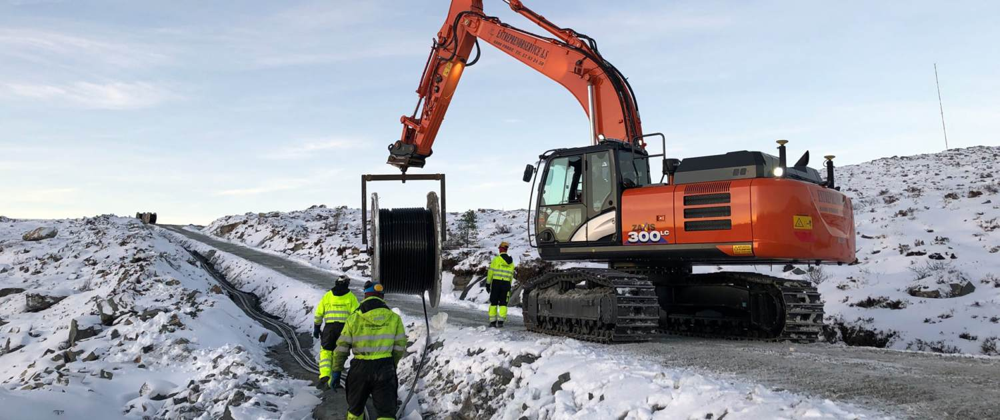
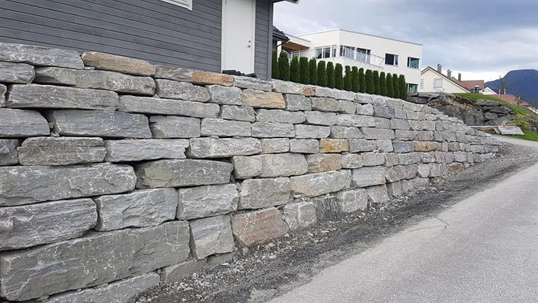
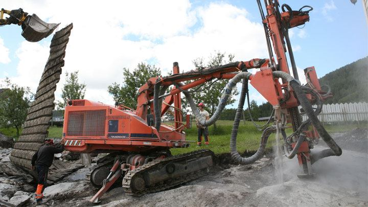
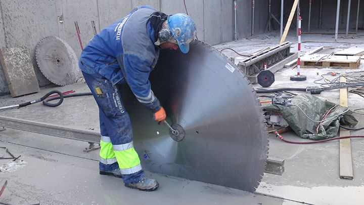
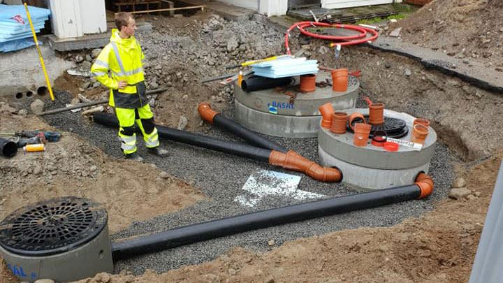
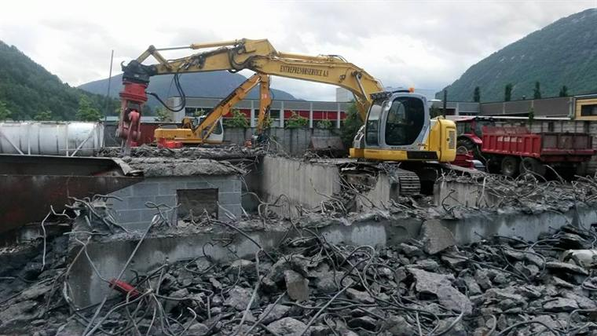
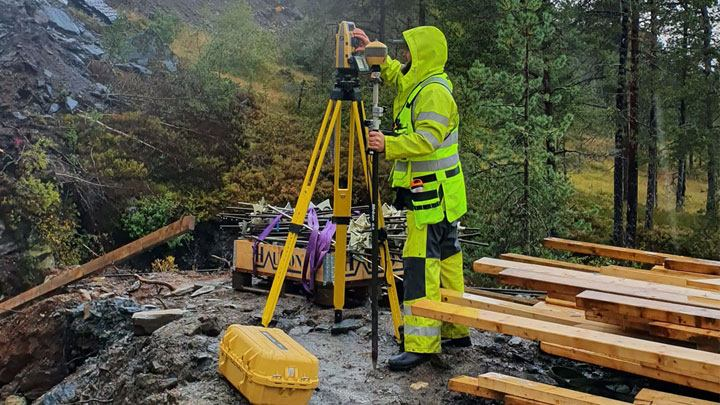
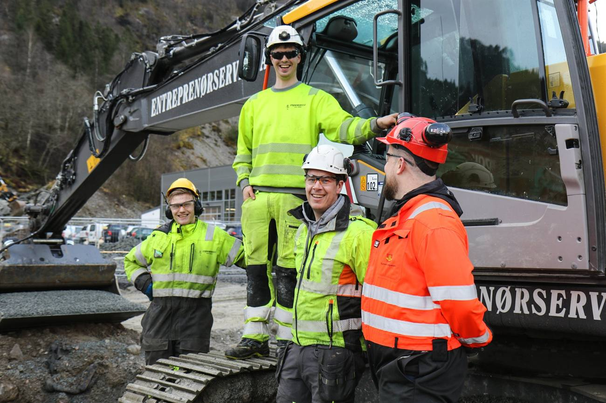

Maskinentreprenør · etablert 1998
Grav, sprenging og naturstein i Sunnfjord
Entreprenørservice AS holder til på Hornnes i Førde og tar oppdrag i alle størrelser – fra små jobber i tunet til store anlegg. Seks fagområder, egen maskinpark og landmåling i samme bedrift.
Uforpliktende befaring og tilbud · post@enservice.no
- Fagområder
- 06
- Etablert
- 1998
- Sertifisert
- ISO 9001 · 14001 · 45001

01Fagområde
Seks fag under samme maskinpark
Vi tar både små og store oppdrag, og har utstyr og folk til å følge jobben fra første spadetak til ferdig dokumentasjon. Åpne et fag for å se hva det omfatter.
-
01 Mur og naturstein Støttemurer, hagemurer og terrassering av tomt
Vi lager murer i alle varianter, fra små dekorative hagemurer til store støttemurer. Typiske oppdrag er praktisk avslutning av skrånende tomter og regulering av ulike platåer i hage og tomt.

-
02 Boring og sprenging Tomter, avgrøfter, kontursprenging og veg
Vi kan fjerne omtrent hva som helst ved hjelp av sprenging. Typiske oppdrag er sprenging av tomter, avgrøfter, under jord (kontursprenging) og sprenging i forbindelse med bygging av veg.

-
03 Betongsaging og kjerneboring Vegger, dekker og kjernehull i alle dimensjoner
Med elektriske høyfrekvenssager sager vi det meste av vegger og dekk i betong. Vi har også utstyr for kjerneboring i alle dimensjoner, og hydraulisk boreutstyr for sirkulære hull i armert betong.

-
04 Graving og avløp Kommunale, statlige og private oppdrag
Vi utfører alt arbeid med graving, sprenging, vann og avløp for kommunale, statlige og fylkeskommunale etater, private entreprenører og byggherrer. Vi har personale med godkjenning for å legge alle typer rør, og ordner nødvendige søknader for deg.

-
05 Riving og miljøsanering Alle typer bygg og konstruksjoner
Vi driver med riving og miljøsanering av alle typer bygg og konstruksjoner. Vi har et godt utvalg av maskiner og spesialutstyr for denne typen arbeid.

-
06 Landmåling Utsetting, innmåling og 3D-maskinstyring
Vi utfører de fleste landmålingstjenester innen utsetting, innmåling og prosjektering. Vi tilbyr også AS-Built-dokumentasjon, mengdeberegning og produksjon av 3D-maskinstyringsfiler.

02Forespørsel
Fortell hva som skal gjøres
Velg fag, sted og oppstart. Oppdragsarket fyller seg ut mens du skriver, så du ser nøyaktig hva som sendes før du sender det. Kvitteringen får referansenummer med én gang – også når vi står i maskinen og ikke får tatt telefonen.
03Slik jobber vi
Fra befaring til ferdig anlegg
-
Steg 01
Befaring
Vi kommer ut og ser på tomta eller anlegget der arbeidet skal skje, og går gjennom hva som må gjøres. Befaring og tilbud er uforpliktende.
-
Steg 02
Tilbud
Du får et tilbud før arbeidet starter, med de fagene oppdraget trenger – også når jobben krever flere av dem samtidig.
-
Steg 03
Utføring og dokumentasjon
Maskinene gjør jobben, og landmåling leverer utsetting, innmåling og AS-Built-dokumentasjon underveis i prosjektet.
04Historikk
Fra Sunnfjord Betongsaging til seks fag
-
1998
Freddy Ulltang og Andre Grov etablerer Sunnfjord Betongsaging AS.
-
2000
Bedriften skifter navn til Entreprenørservice AS.
-
2007
Nye lokaler på Hornnes i Førde, der driften er i dag.
-
2013
Thomas Østerbø tar over den daglige driften etter Freddy Ulltang.
-
2017
Omsetningen passerer 80 millioner kroner, mot om lag 25 millioner i 2007.
-
I dag
Seks fagområder, egen maskinpark og sertifisering etter ISO 9001, ISO 14001 og ISO 45001.
05Om oss
Eierne er også de du ringer
Entreprenørservice er en entreprenørbedrift på Hornnes i Førde, med ansatte som kjenner de lokale forholdene. Her er de to som eier bedriften.
De ansatte har lang erfaring fra anleggsbransjen, høy kompetanse og kjenner de lokale forholdene godt. Maskinparken er stor, allsidig og moderne, og tilpasset alle typer oppdrag uavhengig av størrelse.

06Kontakt
Be om befaring og tilbud
For Entreprenørservice er ingen jobb for liten – og ingen jobb for stor. Entreprenørservice AS
- Anlegg og kontor
- Hornnes, 6804 Førde
- Organisasjonsnummer
- 980 015 998 MVA
- Sertifisert etter
- ISO 9001 kvalitetsstyring, ISO 14001 miljøledelse og ISO 45001 arbeidsmiljø og sikkerhet
- Åpenhetsloven
- Vi følger åpenhetsloven og gjør aktsomhetsvurderinger i egen virksomhet og i leverandørkjeden.